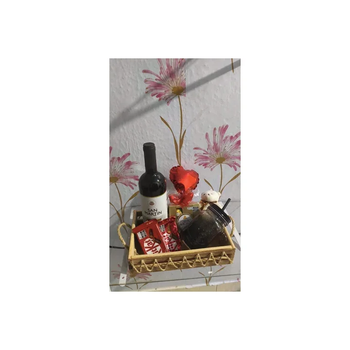
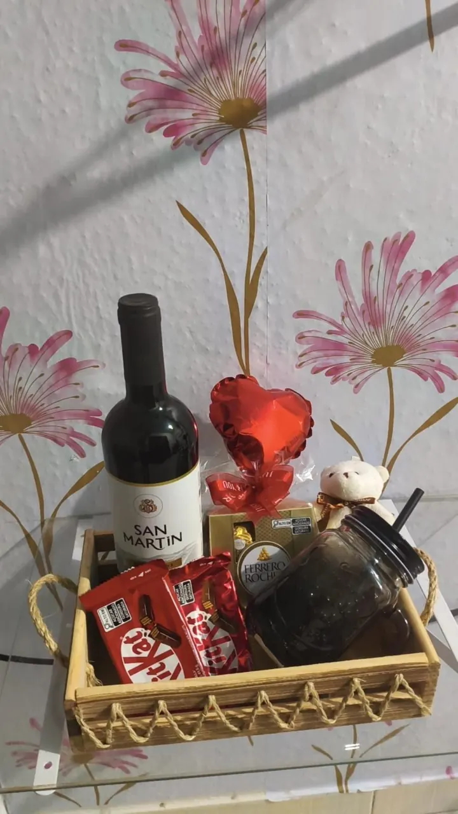
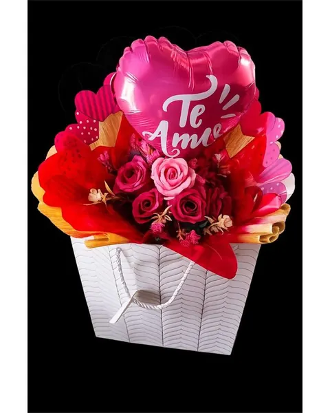
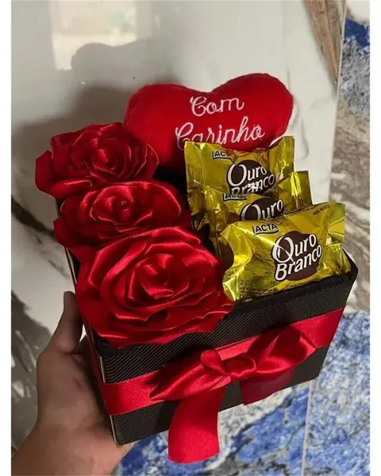

Cestas para compartilhar
Pense nos sabores de quem vai receber e em quantas pessoas vão compartilhar. Explore as cestas de presente como referência e confirme os itens da composição.
Natal com afeto
Um presente para dizer: lembrei de você. Encontre ideias para quem faz parte da sua história e planeje sua encomenda com a Zadoni.
Canaã dos Carajás · PA
Presentes por encomenda e retirada agendada. Consulte disponibilidade para entrega.

As referências abaixo ajudam a iniciar a escolha. Fotos ilustram modelos do catálogo; itens, embalagens e montagem de Natal dependem de confirmação.

Pense nos sabores de quem vai receber e em quantas pessoas vão compartilhar. Explore as cestas de presente como referência e confirme os itens da composição.
Para quem valoriza os pequenos rituais, veja as ideias de cesta de café da manhã. Informe preferências alimentares antes de combinar a montagem.

Se a pessoa gosta de flores e fragrâncias, conheça as rosas perfumadas. Converse sobre as características da opção escolhida e possíveis sensibilidades.

Uma lembrança de Natal pode celebrar a história do casal. Veja os presentes românticos e consulte combinações com chocolates, considerando gostos e restrições.
Parta de uma lembrança, uma cor ou um gosto marcante. Em monte sua cesta, você encontra um caminho para definir os itens; consulte as possibilidades de personalização.
Diga quem será presenteado, o que gosta e o investimento desejado. Se estiver em dúvida, use o Guia para Escolher o Presente Certo.
Informe a data desejada, a mensagem e a forma de recebimento. Para entrega, consulte disponibilidade para entrega. Para retirada, combine o agendamento com a Zadoni.
A reserva só fica definida depois da confirmação no atendimento. Não há promessa de estoque ou prazo nesta página.
“Neste Natal, deixo aqui um carinho e o desejo de bons momentos juntos.”
Adapte a frase com o nome de quem recebe ou uma lembrança de vocês. Encontre outras mensagens para cartão de presente.
Informe a pessoa presenteada, a data desejada, o estilo e sua faixa de investimento pelo WhatsApp. A Zadoni confirma a composição, o valor e a possibilidade de reserva.
Consulte as opções de itens personalizados, montagem e cartão. As possibilidades dependem da composição e da disponibilidade confirmadas no atendimento.
Para entrega, consulte disponibilidade para entrega em Canaã dos Carajás. Para retirada agendada, combine a data e as orientações com a Zadoni.